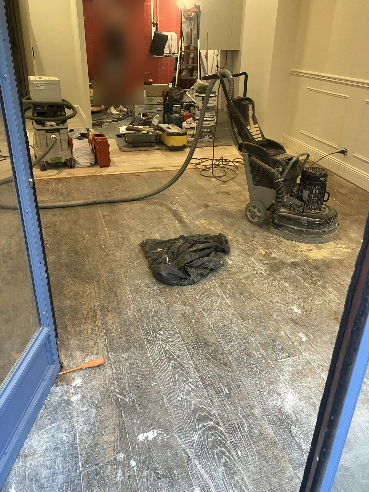
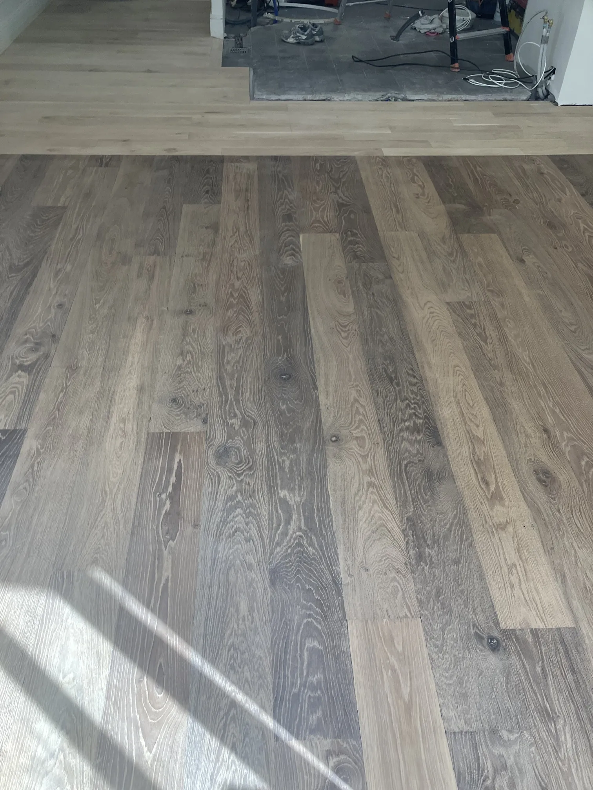
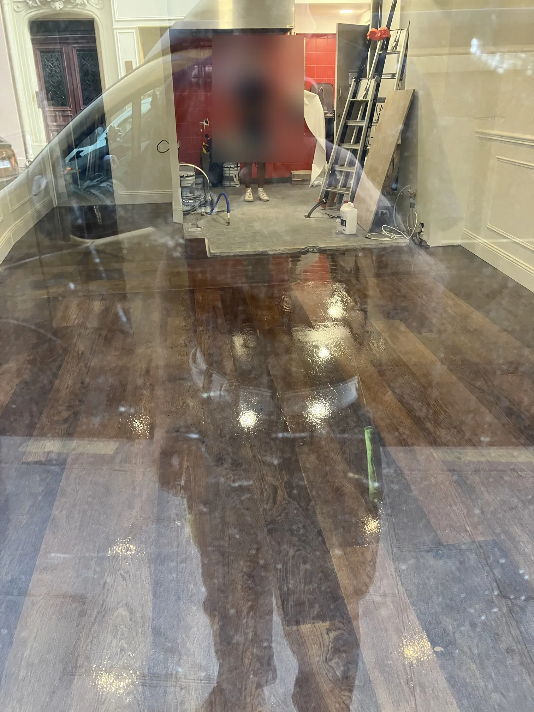
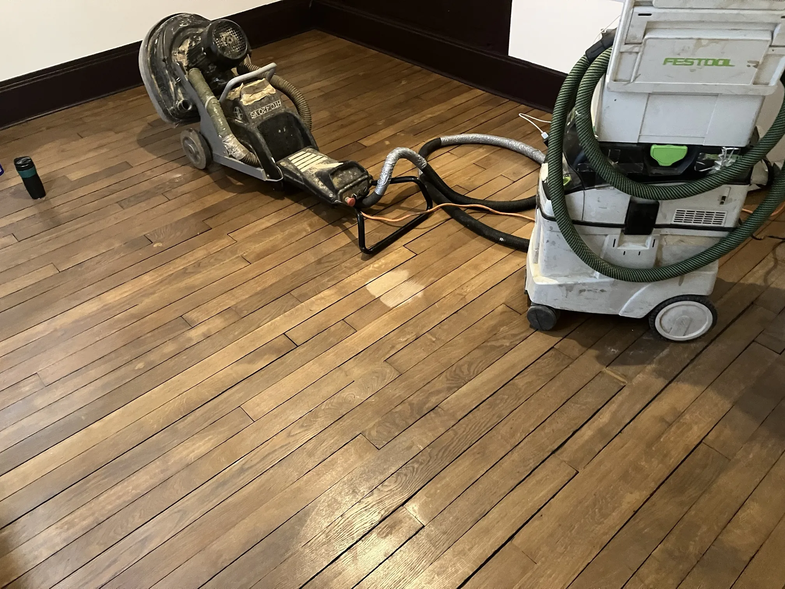
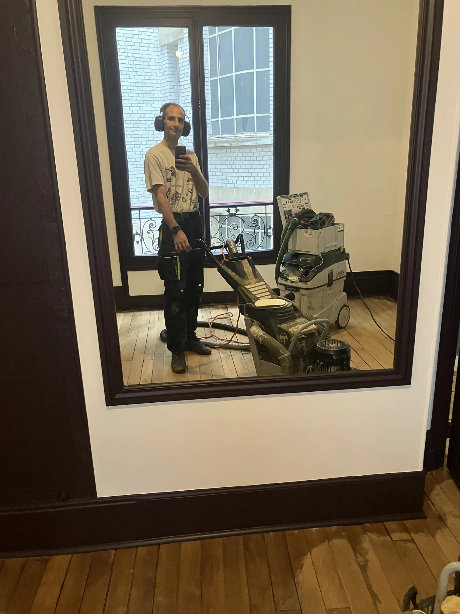
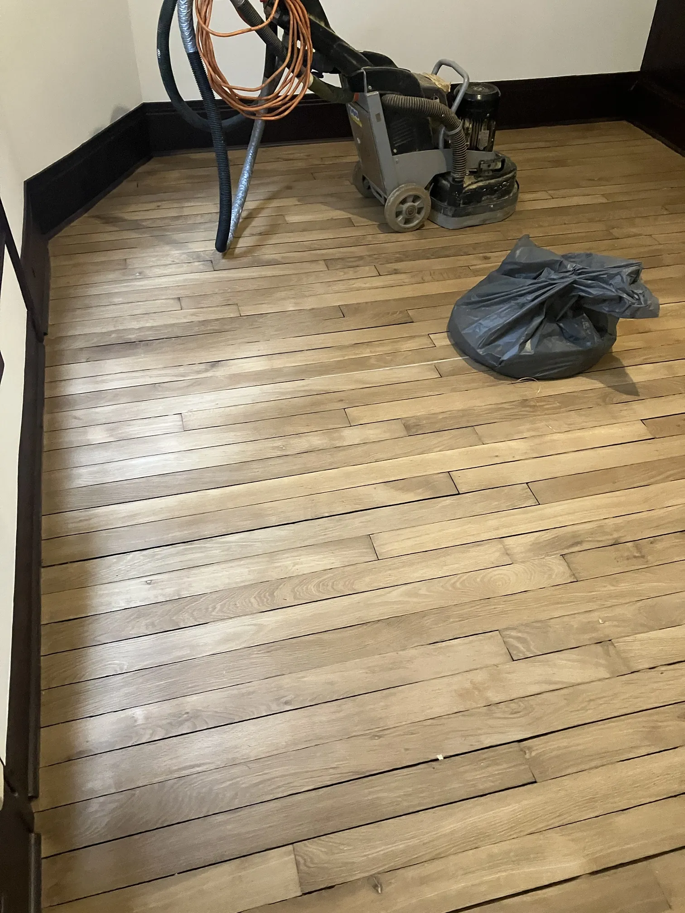
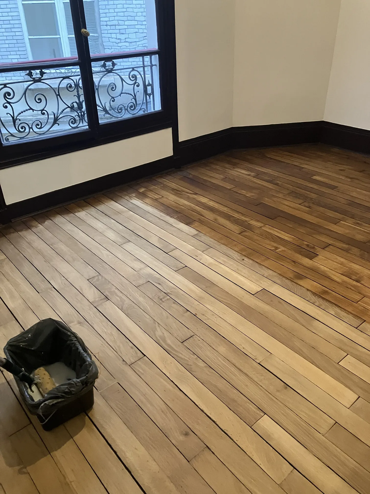
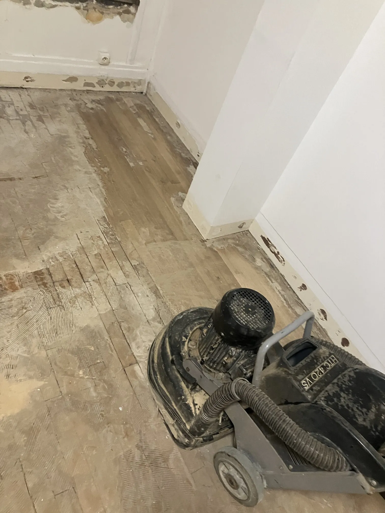

Ils m'ont fait confiance références de ponçage et vitrification de parquet
Des chantiers réels, réalisés par François Gaillard, artisan parqueteur indépendant à Montrouge (92120), pour des particuliers, des commerces et des professionnels du bâtiment à Paris et en Île-de-France.
François Gaillard intervient à Paris pour des particuliers, des commerces et des maîtres d'œuvre. Dernière référence : en septembre 2026, il a poncé et vitrifié en trois couches de Bona Wave K2 (vernis bicomposant) le parquet de la boutique La Fromagerie du Louvre, rue de l'Arbre Sec à Paris 1er (20 m²), à la demande du maître d'œuvre Alforms.
✍️ François Gaillard · Artisan parqueteur indépendant · Montrouge (92120) · Mis à jour le 10 novembre 2026
Boutique La Fromagerie du Louvre — Paris 1er
Fiche chantier
LieuLa Fromagerie du Louvre, 54 rue de l'Arbre Sec, 75001 Paris
Date de réalisation9 septembre 2026
Surface20 m²
PrestationPonçage à la machine planétaire HTC, puis vitrification
VernisBona Wave K2, vernis bicomposant, 3 couches
À la demande deAlforms (Alban Fagnou), maîtrise d'œuvre

Pendant le ponçage : machine planétaire HTC et aspiration Festool, parquet en larges lames d'origine grisé.

Après le ponçage : le bois est mis à nu, prêt pour la vitrification.

Vitrification en cours : vernis bicomposant Bona Wave K2, appliqué en trois couches.
Pourquoi un vernis bicomposant en commerce
Une boutique reçoit du passage toute la journée. Pour les surfaces commerciales soumises à un fort trafic, j'utilise de plus en plus un vernis bicomposant, le Bona Wave K2. Pour les parquets de logement, mon vernis de référence reste le Bona Mega Evo.
Logement : ponçage planétaire et vitrification Bona Mega Evo en 3 couches, à 66 € TTC/m² tout compris.
Commerce, fort trafic : vernis bicomposant Bona Wave K2 en 3 couches, devis par SMS sur photos.
Appartement Paris 8e — fin de rénovation complète, septembre 2026
Fiche chantier
LieuAppartement, Paris 8e arrondissement
Date de réalisationSeptembre 2026
Surface20 m²
PrestationPonçage, puis vitrification au vernis Bona
ContexteDernière étape d'une rénovation complète de l'appartement
À la demande deUne entreprise du bâtiment

Début du ponçage : machine HTC et aspiration Festool.

François Gaillard pendant le ponçage.

Après le ponçage : le bois est mis à nu, prêt pour la vitrification.

Vitrification en cours : à droite, la partie déjà vernie.
Hôtel parisien (8e) — chambre témoin, janvier 2023
Fiche chantier
LieuHôtel du 8e arrondissement de Paris
Date de réalisationJanvier 2023
ChantierChambre témoin, réalisée avant la rénovation complète de l'hôtel
ParticularitéDessin complexe où moquette et parquet s'imbriquent
PrestationPonçage, puis vitrification en 3 couches
À la demande deArzog, entreprise du bâtiment
Cette chambre servait de test avant une rénovation complète. Le dessin mêlait moquette et parquet, ce qui demande de poncer chaque zone avec précision pour obtenir une surface homogène.
Retrait de colle sur parquet — Boulogne-Billancourt, janvier 2025
Fiche chantier
LieuBoulogne-Billancourt (92)
Date de réalisationJanvier 2025
Type de localBureaux
Surface40 m²
PrestationRetrait de la colle sur le parquet, au ponçage
À la demande deUne entreprise du bâtiment

Pendant le chantier : le parquet est recouvert de colle, que le ponçage permet de retirer.
Retirer la colle d'un parquet demande de poncer sans abîmer le bois qui reste dessous. Pour un cas voisin (parquet caché sous une moquette collée), voir parquet sous moquette collée.
Travailler avec un maître d'œuvre, un architecte ou un commerçant
Je peux intervenir à la demande d'un maître d'œuvre ou d'un architecte qui coordonne la rénovation d'un local. Je réalise moi-même le ponçage et la vitrification, sans sous-traitance, et je m'adapte au planning des autres corps d'état.
Envoyez 3 à 4 photos du sol, la surface et l'adresse par SMS au 07 83 92 58 94.
Je réponds avec un devis, sans visite préalable.
Partenaires et professionnels
Ils m'ont confié leur parquet
AlformsMaîtrise d'œuvre et suivi de chantier (Alban Fagnou). Chantier : boutique La Fromagerie du Louvre, Paris 1er, septembre 2026.
ArzogEntreprise du bâtiment. Chantier : chambre témoin d'un hôtel du 8e arrondissement de Paris, janvier 2023.
Une entreprise du bâtimentNom non communiqué. Chantier : ponçage et vitrification d'un appartement en fin de rénovation, Paris 8e, septembre 2026.
Une entreprise du bâtimentNom non communiqué. Chantier : retrait de colle sur le parquet de bureaux (40 m²), Boulogne-Billancourt, janvier 2025.
Cette page s'enrichit au fil des chantiers. Les références de particuliers sont indiquées par quartier uniquement, sans nom ni adresse.
Questions fréquentes
Oui. En septembre 2026, François Gaillard a poncé et vitrifié le parquet de la boutique La Fromagerie du Louvre, rue de l'Arbre Sec à Paris 1er (20 m²), à la demande du maître d'œuvre Alforms. Pour un local commercial, le devis se fait par SMS sur photos.
Pour une surface commerciale soumise à un fort trafic, il utilise de plus en plus un vernis bicomposant, le Bona Wave K2, appliqué en trois couches. Pour les parquets de logement, son vernis de référence reste le Bona Mega Evo.
Oui. Il peut intervenir à la demande d'un maître d'œuvre qui coordonne un chantier de rénovation, comme pour la boutique La Fromagerie du Louvre avec Alforms. Dans ce cas, il réalise lui-même le ponçage et la vitrification, sans sous-traitance.
Le tarif fixe est de 66 € TTC/m², tout compris, pour un parquet de logement (ponçage planétaire et vitrification Bona Mega Evo en 3 couches). Pour un local commercial, le devis est établi par SMS au 07 83 92 58 94 à partir de photos.
Oui. En janvier 2023, François Gaillard a poncé et vitrifié en 3 couches le parquet d'une chambre témoin d'un hôtel du 8e arrondissement de Paris, au dessin complexe mêlant moquette et parquet, à la demande de l'entreprise Arzog, avant la rénovation complète de l'hôtel.
Oui. En janvier 2025, à Boulogne-Billancourt, François Gaillard a retiré par ponçage la colle du parquet de bureaux de 40 m², à la demande d'une entreprise du bâtiment.
Oui. En septembre 2026, à la demande d'une entreprise du bâtiment, François Gaillard a poncé et vitrifié au vernis Bona 20 m² de parquet d'un appartement du 8e arrondissement de Paris, en dernière étape d'une rénovation complète.